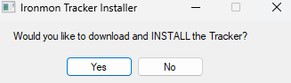

-- FAQ --
What influences attempt count the most?
In Kaizo/Super Kaizo, labs are way more unforgiving. Only like 35% of attempts make it out. In Roguemon this will be much higher by virtue of babies vs babies.
Pivoting deaths are way more likely in kaizo since any BST can be in the grass. IronMon is also Not 100% catch rate, high BST mons possible likely to 1-shot you. You're also limited to 3 catches before starting your run, and 1 per route/area. So you're much less likely to see a 'runnable' pokemon.
In Roguemon, the run is just as likely to die to Brock as it is to Route 24/25, Koga, E4, etc. Linear difficulty instead of spiked. So by virtue of being on runs more, you're more likely to make it far and possibly win.
Guaranteed items with Routes as segment, i think, is an equal trade off., probably slightly favored to making RogueMon slightly 'easier' than IronMon.
Held items and cutting out tons of EXP (boat, routes 12-15, swimmers etc.) should trade off nicely in terms of RogueMon = IronMon for difficulty.
Difficulty equivalence?
Ascension 1 is closer to "Ultimate IronMon".
Ascension 2, and Kaizo IronMon are similar difficulty, but you're also likely to win in less 'attempts'.
Ascension 3 hasn't had much testing, and is still in development, with that said it will likely fall between Kaizo IronMon and Super Kaizo IronMon.
General Questions
Q : In A1 when can you equip the lucky egg?
A : You can equip it as soon as you get it, but after you beat Brock it's gotta go.
Q : I'm struggling with getting RogueMon running
A : The discord is currently the best place to get any help, it has many resources and you are free to ask questions
Q : Where is the Move Re-learner?
A : It's in Celadon City, in the house next to the Pokemon Center. This can not be pre-scouted
Q : What does evolution "BST/10" mean?
A : The bst of whatever you evo into /10. So if you are a minor that evos into a galarian articuno(580bst). Your minor will evo at level 58 for 580/10.
Q : How do I move to Ascension 2 attempts?
A : Make new profiles with the AS2 rnqs files, then in the tracker go to the RogueMon extension go into options and tick Ascension 2+
Q : How do I start new games directly in the lab?
A : Go to the lab or where you want to save, save using the in-game menus, then flush the SaveRAM (Bizhawk > File > SaveRAM > Flush).
What are Ascensions?
Ascensions are a mechanic of this game mode which represents the difficulty level, each increase ups the challenge. The aim is to beat the game with all pokemon types then move up to the next ascension tier where the difficulty increase.
Ascension One - A1
All trainers pokemon will have a 20% level increase.
Beds, Healing spaces, and Nurse Trainers can be used/fought once, at a time of player choosing. Forest Nurse is QOL and not permitted for mid-segment heal.
Ascension Two - A2
All trainers pokemon will have a 40% level increase.
Huge/Pure Power is banned.
Shell Bell is banned if your BST is 500 or higher. Shell Bell and Draining moves not allowed together.
Beds, Healing spaces, and Nurse Trainers cannot be used/fought unless otherwise stated or forced
5 random segments will be Cursed, applying negative effects to you while you are in that segment.
Compound Eyes + Any Sleep move is banned.
Offensive Setup and any Draining moves together = banned. On their own, they're allowed.
Ascension Three - A3
All trainers pokemon will hold sensible items and have a 50% increase.
Huge/Pure Power is banned.
Shell Bell is banned if your BST is 500 or higher. Shell Bell and Draining moves not allowed together.
Beds, Healing spaces, and Nurse Trainers cannot be used/fought unless otherwise stated or forced.
5 random segments and 2 Gyms will be Cursed, applying negative effects to you while you are in that segment.
Compound Eyes + Any Sleep move is banned.
Draining Kiss is banned
All Rival Fights must be completed at end of previous segment, or before next segment (player choice)
Passive Offensive Setup moves are banned (+ATK or +SPA). But attacking moves that boost these stats are allowed (e.g. Rage) X items that boost these stats are still allowed.
All trainers Pokemon will have randomized sensible items.
-- Setup Page --
The guides below use the windows install steps
BizHawk Download Page
Download the win-x64.zip
Extract it, make sure to not install into the One Drive location
Enter the extracted folder and open EmuHawk.exe
Choose your profile and click OK
Click on Tools then Lua Console
For easy of use you should change this setting, then you are done!
Java Download Page
Check to make sure you don't already have Java Offline
Go to the website and make sure to download this version
Follow the install, then check with the command prompt for a successful install
Tracker Download Page
The Tracker has it's own install guide if you prefer Found Here
Download the .lua file
Make a folder and put the lua in it, the tracker files will install into this folder
Open BizHawk and open the .lua file you installed
You should see the below image, if not you might need to restart BizHawk

In the output you should see this, you can also look into the folder
Restart BizHawk, open the new .lua script you should then see this
Now save your session like below, name it as you like
You should change the setting so it auto loads as below
Congrats the tracker should now auto start when you launch BizHawk!
NatDex Github
Below is where we will start, assuming you have followed the guide from the start
We will go into the settings page
Into Extensions
Install New Extension
Copy and paste the NatDex Github link into the box
You should see this after a successful install
You should also confirm in your folder
You then want to locate the patch
Patcher Site
You then want to go to the patcher site and fill it like so
Save it where you like, I will name it like so
Open the Rom through BizHawk and make sure the extension is on
Congrats, now onto the RogueMon Guide
RogueMon Github
Like with NatDex we will install a new extension
On a successful install you should see this
You should then turn on the tracker
Then reboot BizHawk, check the top left and the lua console
You then can proceed to go into settings and click New runs
Click Profiles then Add new
This is where you make your different profiles
After filling it out click save.
The only changes you should be making from the example are the randomizer settings and profile name
You can create multiple profiles like below

When you have selected the profile you want to use
To finish off go back to the tracker settings page and go into Gameplay
Make sure this setting is ticked
Congrats RogueMon should now be setup!
If you click new run you should see a change in the top left
Make sure to join the discord to join fellow runners
To update RogueMon you go to the extensions page and click check for update
You should then see this screen
After a successful install you should see this
Congrats you have updated successfully!
Make sure to restart after the update and then check options to see any changes
Java
Issue : I cant randomize the game
Java Offline might not be installed
Roguemon Setting Strings
The tracker will automatically put you in the Kaizo RNQS folder, make sure to navigate to the RogueMon Settings Strings
NatDex
Make sure in Bizhawk you are opening your patched rom not the base rom.
Tracker Extension Folder
In the tracker extension folder you should see both NatDex and RogueMon Folders.
Bizhawk
Issue : Bizhawk wont open
1. You might not have unzipped the folder Bizhawk is in.
2. If you are on an older system os like (Windows 7) you will need to install the pre-requisites
Still having issues?
Join the discord, there is a help-and-support channel!